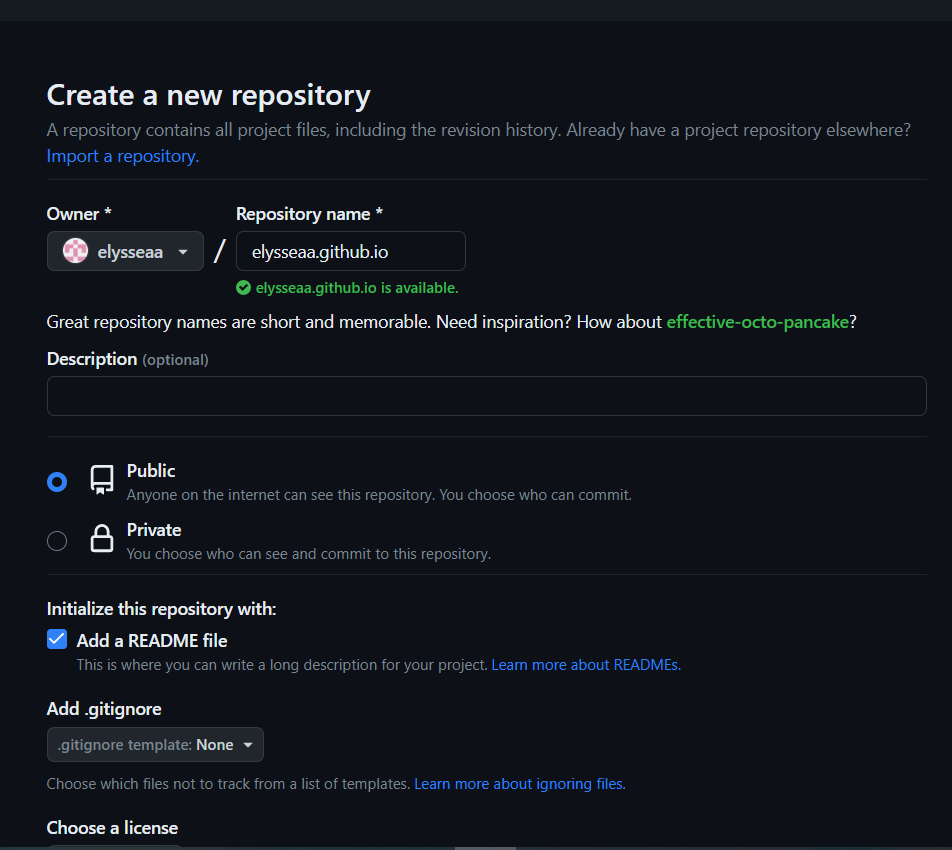

Go to github.com and follow the instructions found when clicking the "sign up" button on the top right hand corner.
Create the repository by clicking the plus sign next to your profile picture on the top right hand corner of the screen and then clicking "New repository".

Make sure to check out the different site types to know what you want to make before reading below.
-
making a user/organization site:
Once you've clicked "New repository", the first thing you need to do is enter a repository name. Enter (username or organization name).github.io, as shown in the image.
You can also choose to add a README file, which is a file where you can describe your repository to people who are looking at your code, but you don't have to.
You could also add a .gitignore file or license file, but you're probably only going to use those if you have more experience using github pages in the future because they deal with more advanced topics.
If you want your website to be publicly viewable (as in, you can search up for it), make it public. If you want to choose who can see it, make it private.
-
making a project site:
Once you've clicked "New repository", the first thing you need to do is enter a repository name. You can enter anything as long as it isn't the one mentioned under user/organization sites, as shown in the image.
You can also choose to add a README file, which is a file where you can describe your repository to people who are looking at your code, but you don't have to.
You could also add a .gitignore file or license file, but you're probably only going to use those if you have more experience using github pages in the future because they deal with more advanced topics.
If you want your website to be publicly viewable (as in, you can search up for it), make it public. If you want to choose who can see it, make it private.
-
special third option:
Once you've clicked "New repository", the first thing you need to do is enter a repository name. If you only enter the name of your account, you will get a special message, as shown in the image.
This third option allows you to make something like an about me page linked to your github account. If you do what the special message says, your repository will have a README file to insert your information in.
You could also add a .gitignore file or license file, but I don't know why you'd need that for an about me page.
I don't really know what making the repository private would do. You can try it out I guess.